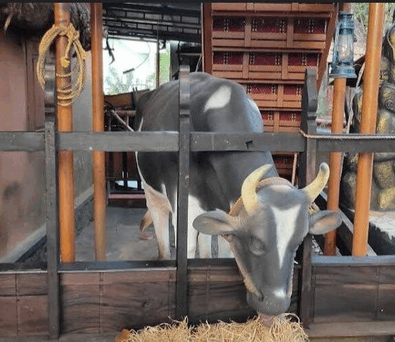

About Mavelikara
Mavelikkara is a taluk and municipality in the Onattukara region of Alappuzha district in the Indian state of Kerala. Located in the southern part of the district on the banks of the Achankovil River. The name Mavelikara is believed to be turned out from the words Maveli or Mahabali, the mythical king of Kerala, and Kara means land. This land is believed to be the place 'Mattom Mahadeva temple' where king Mahabali knelt before Vamana, offering his head for Vamana to keep his feet.
The town boasts about a rich historical and cultural background. The Chettikulangara Devi Temple, known for the Kumbha Bharani festival is located near the municipality. The place is home to one of the 108 Shiva temples of Kerala created by Lord Parashurama, the Kandiyoor Mahadeva Temple. It was also a major centre of trade and commerce in ancient Kerala and the erstwhile capital of the rulers of Onattukara. As a result of the close association with the Travancore Royal Family, Mavelikkara gained modern facilities well ahead of other places in the state. It is one of the oldest municipalities of the state. Even before India attained independence, Mavelikara had a super express transport service to Trivandrum.

Demographics of Mavelikara
As of 2011 Census, Mavelikara had a population of 26,421 with 12,070 males and 14,351 females. Mavelikara Municipality has an area of 12.65 km2 (4.88 sq mi) with 7,184 families residing in it. The average female sex ratio was 1189 higher than the state average of 1084. 7.7% of the population was under 6 years of age. Mavelikara had an average literacy of 96.9% higher than the state average of 94%: male literacy was 97.8% and female literacy was 96.2%.
Places to Visit in Mavelikara




Educational Organizations
About Us
Welcome to MavelikaraInfoHub, a digital haven dedicated to unraveling the charm and uniqueness of our beloved hometown, Mavelikara. As stewards of this platform, we take pride in offering a virtual gateway to the heart and soul of Mavelikara, sharing the rich tapestry of its history, culture, and community spirit.
At MavelikaraInfoHub, our mission is to bring Mavelikara closer to you, irrespective of geographical boundaries. We aspire to foster a sense of connection and nostalgia for those with roots in Mavelikara, while simultaneously introducing the town's beauty to those discovering it for the first time. Through curated content and insightful narratives, we aim to encapsulate the essence of Mavelikara and create a digital space that feels like home.
We are committed to providing accurate, authentic, and up-to-date information about Mavelikara. Our team consists of passionate individuals with deep roots in the town, dedicated to showcasing its beauty and preserving its cultural legacy.
Whether you're a Mavelikara native, a curious explorer, or someone reconnecting with your roots, we invite you to join us on this digital journey. Let MavelikaraInfoHub be your virtual companion, bringing Mavelikara to life on your screens.
Thank you for visiting, and we look forward to sharing the magic of Mavelikara with you!